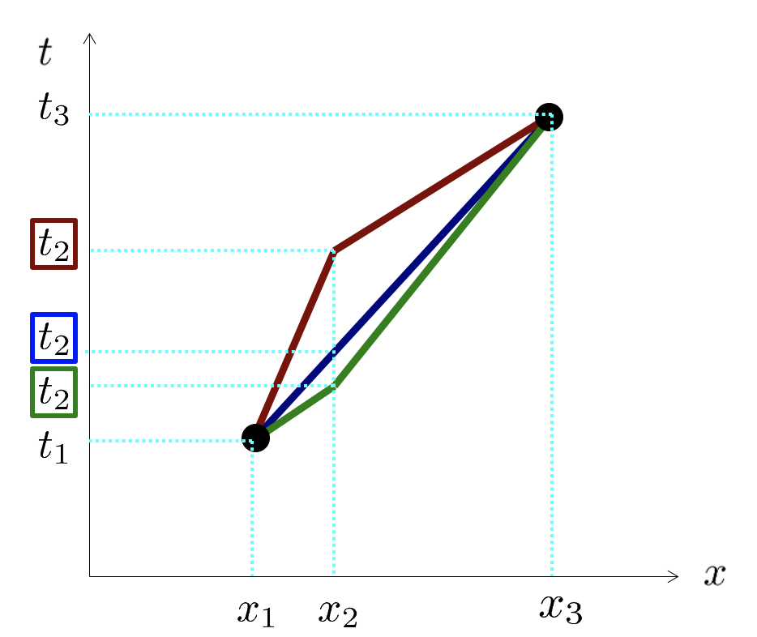

Forrige side🙂 🙁Maksimal aldringPADLET

Fikk du... Ja, jeg fikk...
$$\frac{\Delta t_{12}}{\sqrt{\Delta t_{12}^2-\Delta x_{12}^2}}+\frac{\Delta t_{23}}{\sqrt{\Delta t_{23}^2-\Delta x_{23}^2}}=0$$ ??? Hvis du ikke fikk det til skal du snart se hvordan, men først, kan du se hvorfor du kan skrive dette som: $$\frac{\Delta t_{12}}{\Delta\tau_{12}}=\frac{\Delta _{23}}{\Delta\tau_{23}}$$ (Hint: Hva er egentiden Δτ og hvordan kan du skrive den uttrykt med Δt og Δx?)